Bc. Ondřej Krsička
Supervisor: Mgr. Tomáš Petříček, Ph.D.
NPRG070 — Research Project · Charles University, MFF
Name inspired by Webstrates → myWebstrates → Denicek → myDenicek
A computational substrate for document-oriented end-user programming — Petříček, 2025
/items/2/name, /speakers/*Four key experiences:
Introduce CRDT principles into Denicek and implement formative examples
that demonstrate its end-user programming capabilities.
Conflict-free Replicated Data Types — a foundation for local-first software.
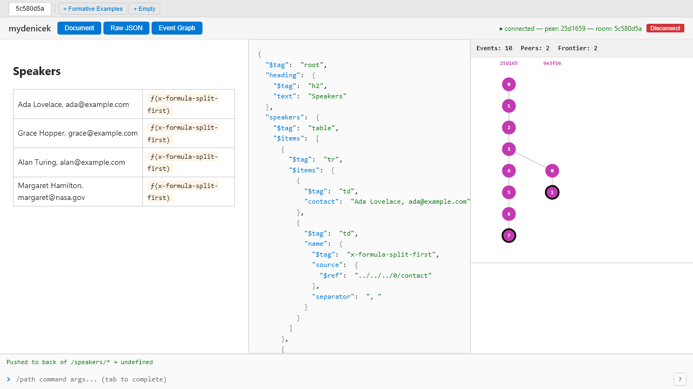
Three panels: rendered document · raw JSON tree · event DAG graph
Kleppmann, M. & Beresford, A. (2020). A Conflict-Free Replicated JSON Datatype.
<div> → <li> "Talk about CRDTs"
= delete li + create <ul> + re-insert li
= set value → "Talk about OT"
Alice's delete removed li. Bob's edit targets the deleted original → edit is lost.
<div> → <li> "Talk about CRDTs"
create <ul>, move li inside
create <ol>, move li inside
<ul> → <li> ✅ <ol> → (empty, orphaned) 👻
Cannot auto-delete — indistinguishable from an intentionally empty element.
Loro's movable tree CRDT solves this with native atomic move.
$0, $1), no path retargeting after structural changesspeakers/*pushBack to /speakers + copy input → new item
Targets /speakers
/speakers → /talks
Replay uses opaque node ID → works for that node, but can't follow renames, wraps, or reindexing
OT transforms /speakers → /talks automatically. Replay follows all structural changes.
The Denicek editing model is inherently OT-shaped.
node_abc123.set("name", "Ada")dk.set("speakers/0/name", "Ada")speakers/* → all itemsValidated by property-based tests (fast-check) and a random fuzzer.
| Layer | Package | Role |
|---|---|---|
| Core CRDT | @mydenicek/core |
Event DAG, OT rules, edit types, formula engine |
| React bindings | @mydenicek/react |
useDenicek hook, reactive doc state |
| Sync protocol | @mydenicek/sync-server |
WebSocket sync client/server, event relay |
| Web app | apps/mywebnicek |
React UI, command bar, event graph viz |
The sync server is a pure relay — it doesn't materialize documents.
Custom edits only need to be registered on the client.
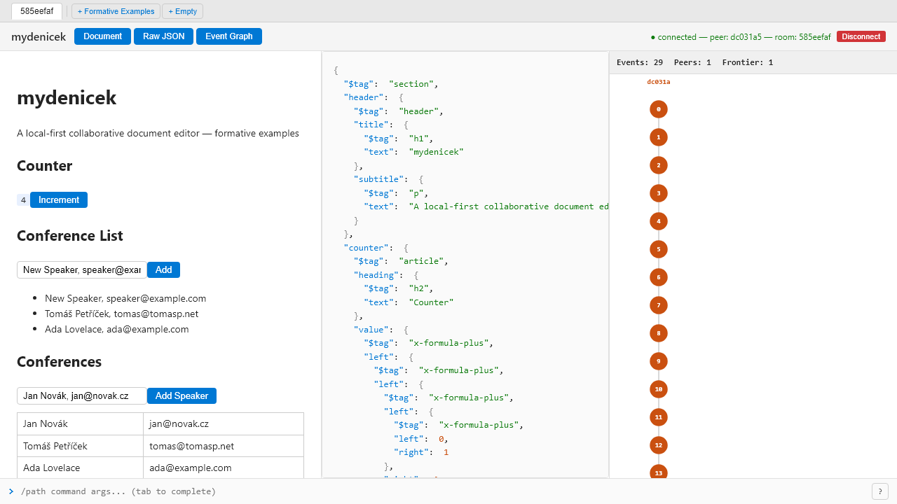
Each "Increment" click replays 3 recorded edits:
x-formula-plusleftright = 1Formula evaluates nested plus-tree:((((0 + 1) + 1) + 1) + 1) = 4
JSON & event graph show the growing structure in real time
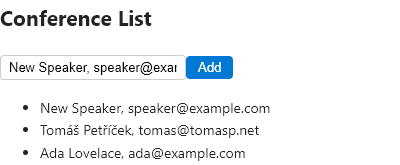
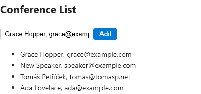
A flat <ul> with "Name, email" entries.
The Add button replays a 2-step recipe:
pushFront — insert empty <li>copy — fill it from the input fieldSame pattern works for any list with a composer input.
This is the "before" — next we'll refactor it into a table.
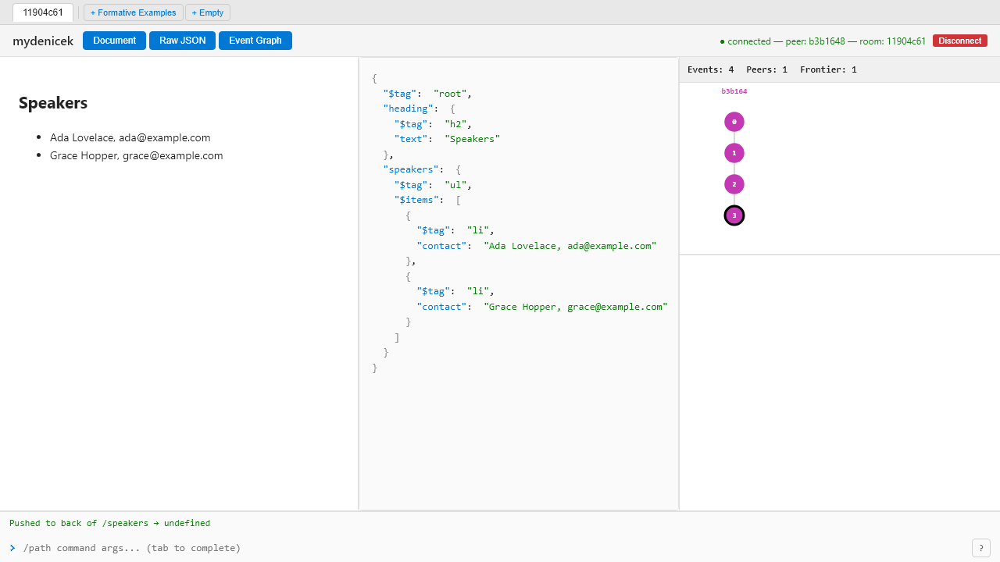
Both peers synced — a flat <ul> with "Name, email" contacts. They go offline.
Alice — refactors to table (offline)
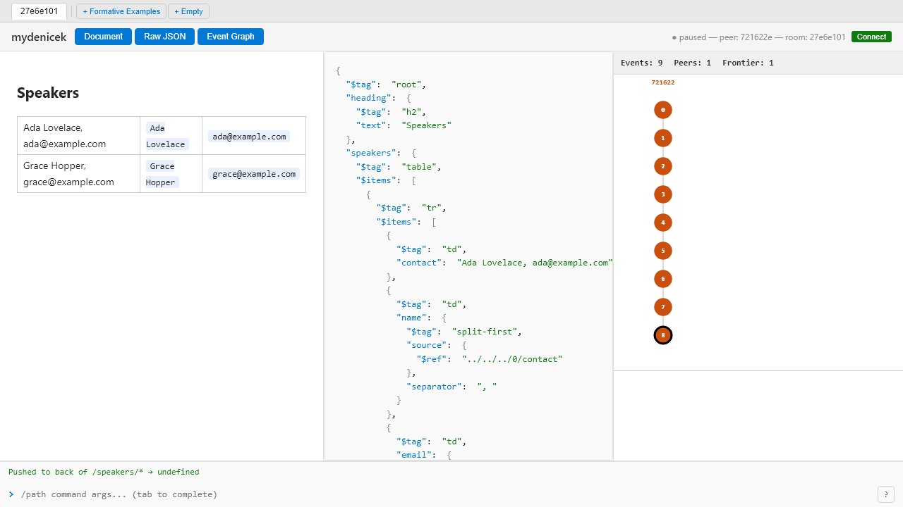
Bob — adds speakers (offline)
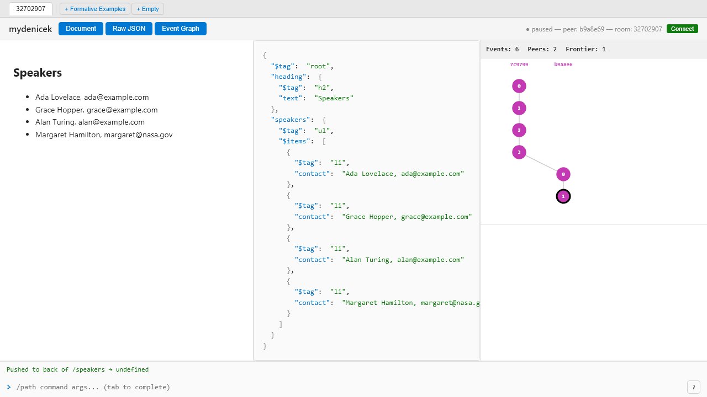
Alice: updateTag → wrapList → wrapRecord split-first → pushBack split-rest · Bob: pushBack × 2
Both reconnect → events merge → all speakers in the table. Event graph shows the concurrent fork merging into a single frontier.
The same conference list can be built from an empty document.
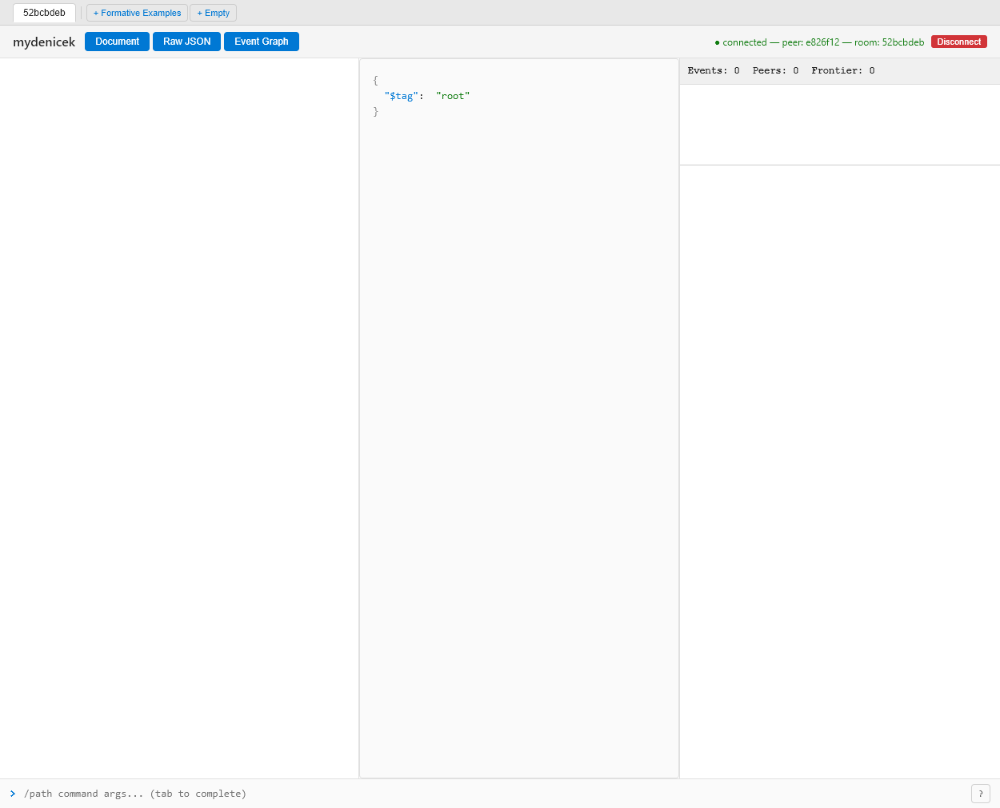
Start: { "$tag": "root" } — command bar at the bottom
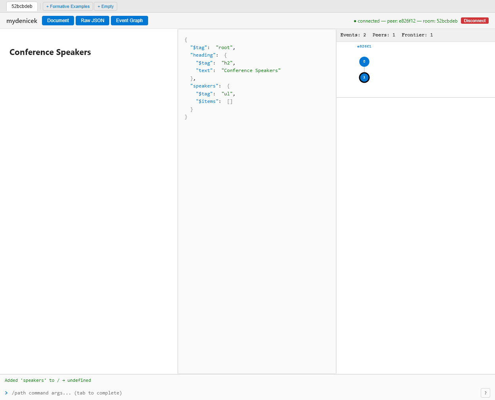
1 Add a heading to root:
/ add heading {"$tag":"h2","text":"Conference Speakers"}2 Add an empty speakers list:
/ add speakers {"$tag":"ul","$items":[]}The / selector targets the root. JSON values create subtrees.
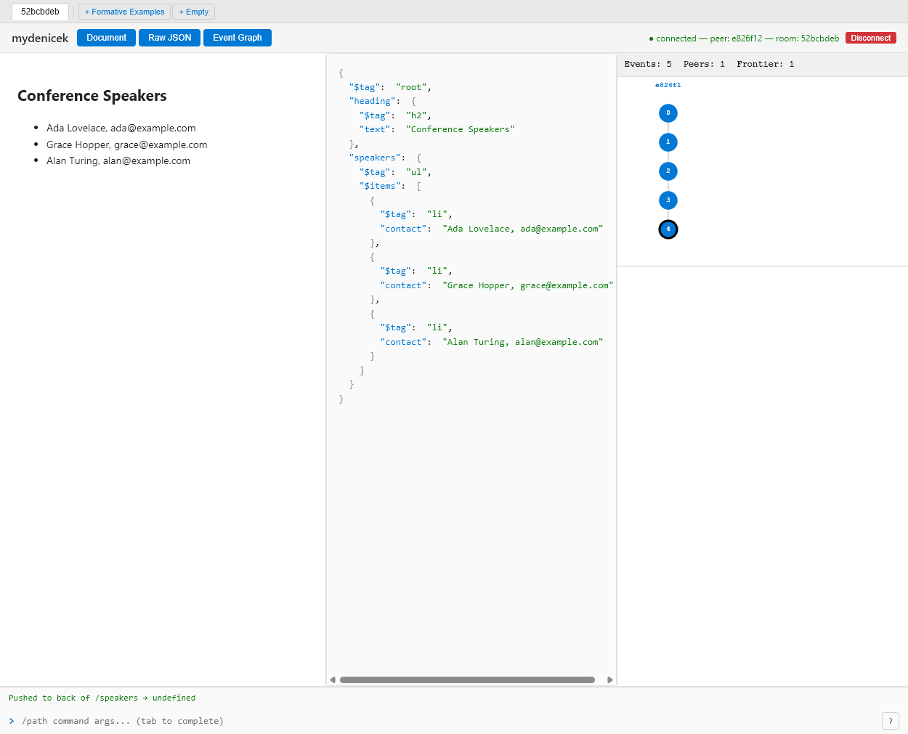
Push items with "Name, email" format:
/speakers pushBack {"$tag":"li",
"contact":"Ada Lovelace, ada@example.com"}
/speakers pushBack {"$tag":"li",
"contact":"Grace Hopper, grace@example.com"}
/speakers pushBack {"$tag":"li",
"contact":"Alan Turing, alan@example.com"}Each pushBack is one event in the DAG. The event graph grows.
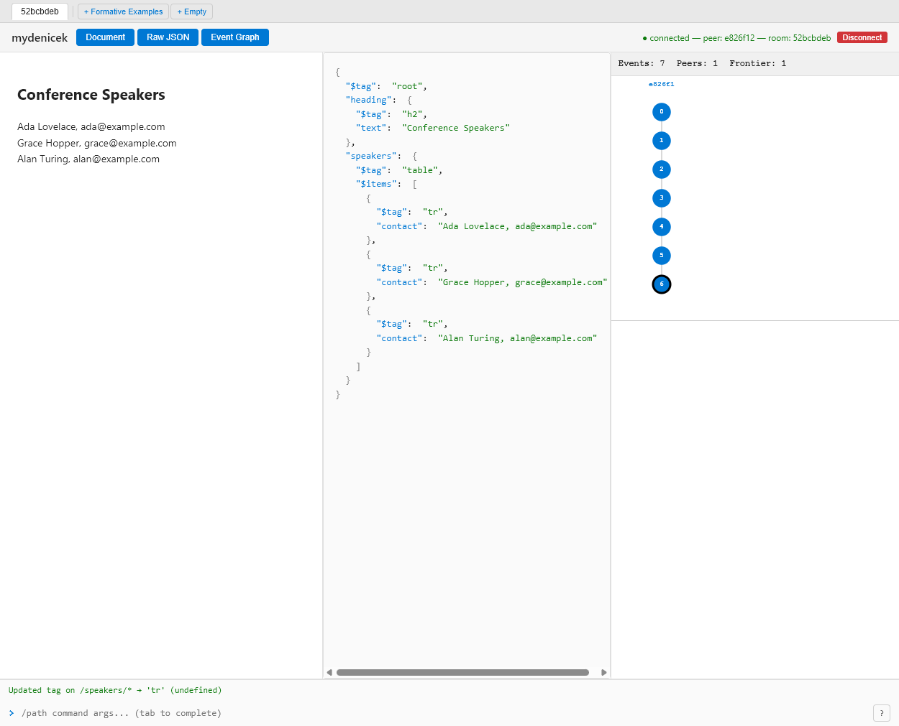
Structural edits transform the document in place:
/speakers updateTag table ← ul → table
/speakers/* updateTag tr ← li → tr (wildcard!)The * wildcard applies the edit to all children at once.
These are recorded events — a second peer receives them via sync and sees the same table.
| Original Denicek | Specification | Implementation | |
|---|---|---|---|
| Sync | OT + central server | Loro CRDTs | Custom OT event DAG |
| Addressing | Selectors | Opaque node IDs | Path selectors |
| Protocol | Server-mediated | Loro binary format | JSON events over WebSocket |
| Dependencies | — | Loro (Rust/WASM) | Zero (pure TypeScript) |
| Convergence | Fragile OT | Loro guarantees | OT rules + property tests |
Live: krsion.github.io/mydenicek
Code: github.com/krsion/mydenicek
JSR: @mydenicek/core · @mydenicek/react
Questions?
Petříček, T. (2025). Denicek: Computational Substrate for Document-Oriented End-User Programming.
Demo video ·
Detailed explanation